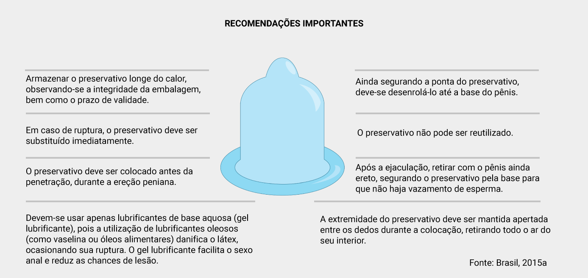

Sumário
Recomendações aos profissionais da atenção básica
Nesta unidade...
Práticas para melhorar as orientações ao homem
Comportamentos em saúde relacionam-se a fatores pessoais, cognitivos, econômicos, sociais, culturais e estruturais. Uma importante forma de prevenção de doenças para os homens se dá pelo uso de preservativos nas relações sexuais. Entretanto, ainda há muitas pessoas com dúvidas sobre como usar corretamente o preservativo masculino.
Você identifica essa dificuldade entre o público que atende?
Para que o uso aconteça de maneira correta, alguns cuidados são importantes e podem ser abordados em atividades educativas, tanto para adolescentes, o que pode ser feito inclusive nas escolas, quanto em atendimentos a homens adultos, inclusive idosos, que devem ser orientados dentro e fora da Unidade Básica de Saúde. Observe a seguir algumas dessas recomendações.
Além dessas orientações, é importante destacar de que forma o profissional de saúde pode contribuir para a oferta de uma atenção de qualidade no campo da saúde sexual. Elencamos algumas orientações que podem ajudar você, profissional. Confira:
- Primeiramente ouvir.
- Ter proatividade no que se refere a abordar, nos atendimentos, os temas sexualidade e qualidade da atividade sexual: satisfação, prática do sexo seguro, existência e tipos de dificuldades.
- Considerar, na abordagem, o contexto de vida da pessoa ou do casal, influências religiosas, culturais, educação sexual, qualidade da relação e da comunicação com o(a) parceiro(a), uso de álcool e outras drogas, desejo ou não desejo em relação a ter filhos, entre outras questões que possam ser relacionadas à saúde sexual.
- Prestar suporte emocional e psicológico (acolhimento, escuta qualificada).
- Orientar e ajudar a desfazer mitos e tabus, com uma abordagem positiva do prazer sexual.
Nos casos em que as dificuldades são sexuais, pode-se discutir as possibilidades para a realização de mudanças graduais, no sentido de buscar maior satisfação. Acompanhe algumas, a seguir.
- Dialogar sobre a possibilidade de o casal aumentar o repertório sexual (local, posições etc.).
- Incentivar a comunicação entre os(as) parceiros(as), o que resultará maior confiança e segurança para solicitar um ao outro o que desejam.
- Trabalhar com a pessoa o direito que ela tem em se sentir confortável, para sentir e dar prazer.
- Buscar despertar na pessoa a consciência de que ela também tem responsabilidade pelo seu próprio prazer.
- Incentivar o autoconhecimento.
- Incentivar a troca de carinhos e carícias que não estejam restritas aos genitais.
- Instituir cuidados gerais da saúde e promover o autocuidado, que podem contribuir para uma melhor saúde sexual.
- Identificar e substituir, quando possível, medicamentos que possam interferir na saúde sexual e na saúde reprodutiva.
Nesta última unidade, vimos que é fundamental que a organização dos serviços de saúde promova um melhor acesso àqueles que buscam o serviço e que cada profissional incorpore em sua rotina a preocupação de identificar os homens em situação de maior vulnerabilidade, garantindo atendimento humanizado e resolutivo.
Também se faz necessário o desenvolvimento de ações na comunidade que promovam o aumento da percepção de risco para esses agravos, além de estimular a adoção de práticas seguras para a saúde. Continue seus estudos, no Livro do módulo.